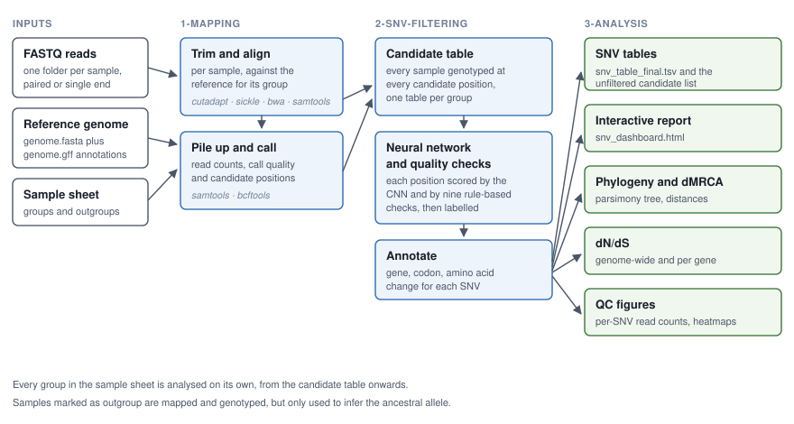
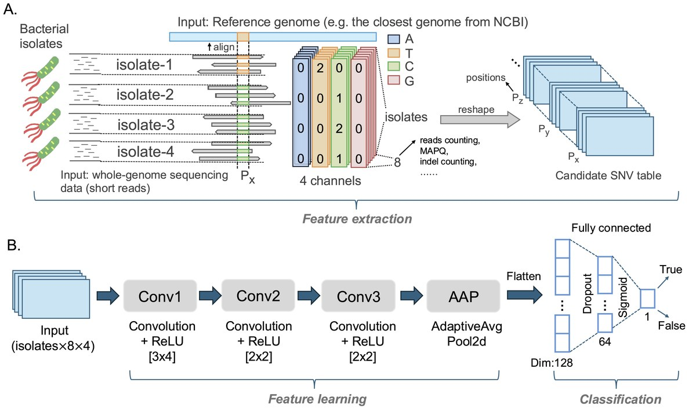

Pipeline overview
AccuSNV is a Snakemake workflow with three numbered stages, which are also the three numbered directories it writes. This page follows a set of isolates through all of them. If you only want to know why a particular call was kept or dropped, skip to How SNVs are called.
{kind=link}

The stages, and which directory each one writes to.
Stage 1: mapping (1-Mapping/)
Everything here is per sample and embarrassingly parallel, so this is the stage that takes the wall-clock time and, on a cluster, the most jobs.
Reads are trimmed first. cutadapt removes the 3’ adapter (adapter_sequence, Nextera by
default), then sickle quality-trims at Q20 and drops anything shorter than 50 bp. Reads whose
mate did not survive go to a separate _unpaired.fastq.gz file, which AccuSNV does not map but
leaves for you to look at.
bwa mem then maps the trimmed reads to the reference for that sample’s group, building the
index on the first run if it is not already there. Its output is piped through samclip --max 0,
which throws away any read with a soft-clipped end; those clips sit at indels and repeat edges and
are a common source of false SNVs. Pass --skip_samclip to keep them. bowtie2 is available by
setting aligner: bowtie2, and maps end-to-end, so samclip does not apply to it.
The alignments go through samtools, which sorts by name, fixes mate information, sorts by
coordinate, and removes duplicates with markdup -r. Reads within markdup_optical_distance
pixels of each other count as optical duplicates, which matters on patterned flowcells. The SAM
and all the intermediate BAMs are deleted once the final sorted BAM exists.
Two things then happen from the deduplicated BAM:
samtools mpileupproduces a full pileup, which AccuSNV converts into a per-position matrix holding, for every base of the genome, the number of forward and reverse reads supporting each of A, T, C and G, their average base quality, mapping quality and distance from the read end, and the number of reads supporting an insertion or a deletion nearby. That is 40 numbers per position; AccuSNV uses the read counts and the indel counts. The pileup file, which is large, is deleted as soon as this matrix is written.bcftools mpileup | bcftools callproduces a VCF for the whole genome. Two things are read out of it. The FQ score at every position becomes that sample’s call-quality vector. Positions where a single-base substitution was called with FQ belowmax_fq(default -30) become that sample’s list of candidate variant positions.
Note
Only simple single-base substitutions are read out of the VCF. A record with more than one
alternate allele, an indel, or a multi-base reference is skipped. This is a real limit on recall:
a genuine SNV that bcftools happened to emit as a multi-allelic record will not become a
candidate position and cannot be recovered later.
Stage 2: SNV filtering (2-SNV-filtering/)
From here on, each group is handled on its own.
Every ingroup sample’s list of candidate positions is merged into one list for the group. Outgroup samples do not contribute; they would only add positions where the outgroup differs from the reference, which is not what the analysis is about.
Then every sample is genotyped at every one of those positions. The candidate mutation table
holds, per sample and per position, the eight read counts (A, T, C, G on the forward strand, then
the same four on the reverse), the call quality, and the indel counts. This is the point at which
a position found in one isolate becomes a comparison across all of them. Two genome-wide coverage
matrices are written alongside it, one raw and one normalised, which later stages use to work out
whether a position sits in a repeated or duplicated region. All of this lands in
2-SNV-filtering/raw_tables/, the last stage before any judgement is made about what is real.
Next comes the calling stage, where the network and the rule-based checks run. Every candidate
position is scored by the CNN, run through nine rule-based checks, and given a final label;
How SNVs are called covers the details. The stage writes the per-position verdicts,
candidate_mutation_table_final.npz for machine-readable downstream use, the QC figures, and an
internal state file the later stages read.
Finally, each surviving position is placed against the reference annotations: which gene it falls
in, where in that gene, which codon, and what the amino-acid consequence is. Positions within
250 bp upstream of a gene are typed as promoter. The result is merged with the filter verdicts to
give snv_table_unfiltered.tsv, and the rows the caller accepted are split out into
snv_table_final.tsv.
Stage 3: evolutionary analysis (3-Analysis/)
Four things run from the annotated tables, and any of them can be switched off.
dN/dS is computed genome-wide and per gene, from the nonsynonymous and synonymous counts compared against what neutral evolution would produce on this genome (dN/dS).
dnapars builds a maximum-parsimony tree from the base calls at the SNV positions, with the
inferred ancestor and the reference genome added as two extra tips, and optionally one tree per
SNV coloured by base call. Alongside it, the dMRCA tables record how many SNVs separate each
sample from the inferred common ancestor, plus the median, minimum and maximum across the
ingroup (Phylogeny and dMRCA).
The report is one self-contained HTML page holding every candidate position, its read counts, its gene, and the tree, plus a bar chart PNG per SNV and, for small runs, three QC heatmaps (The interactive report).
The neural network
{kind=link}

The network, as published in Liao et al., Genome Research 2026.
The input for one candidate position is a small image. One axis is the samples in the group; the other holds the evidence at that position: forward and reverse read counts, call quality, indel counts, and the sample’s genome-wide median depth. The four channels are the bases, but they are not in ATCG order. They are reordered per position into most common, second most common, third, fourth, across the cohort, so the network sees “the majority base” and “the challenger” in fixed slots regardless of which nucleotides they happen to be. The counts are normalised twice, once against the total evidence at that position and once against each sample’s own median depth, so that the same variant looks the same at 20x and at 200x.
Three convolutional layers, global average pooling, two fully connected layers and a sigmoid produce one number per position: the probability that this is a real difference between the isolates. Above 0.5 counts as a call. Because the pooling is global, the network takes any number of samples without retraining.
What this buys you over threshold rules is context. A rule can only ask whether one sample’s evidence at one position passes a cutoff. The network sees the whole column at once, so it can recognise a variant that is well supported in one isolate and cleanly absent in the others even when the depth is too low for any individual cutoff to be met, and it can reject a position where every sample has a smear of minor alleles that looks like a real variant to a per-sample rule.
Before scoring, a preprocessing pass removes positions the network is not able to judge:
positions where every remaining sample has the same base, positions where the forward and reverse
strands disagree about which base is there, positions supported by a single read on one strand,
and positions next to an alignment gap. Those positions are recorded, and the gap ones show up as
Gap_filter in the tables.
What runs when
The Snakemake rules, in order, with the module each one calls:
Rule |
Scope |
What it runs |
|---|---|---|
|
sample |
|
|
sample |
|
|
reference |
|
|
sample |
|
|
sample |
|
|
reference |
|
|
sample |
|
|
sample |
|
|
sample |
|
|
sample |
|
|
group |
merges the per-sample candidate lists |
|
group |
|
|
group |
|
|
group |
|
|
group |
|
|
group |
|
|
group |
|
Every stage can be run on its own from the command line, which is occasionally useful for
debugging; each module has a -h.